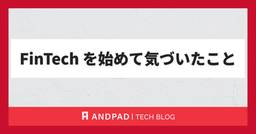
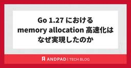

ANDPAD Tech Blog
https://tech.andpad.co.jp/
ANDPAD の開発部からのお知らせやエンジニアリングに関する話題を発信するTech Blog です。
フィード

FinTechを始めて気づいたこと
ANDPAD Tech Blog
はじめまして。アンドパッドでPdMをしている若林です。 担当しているのはFinTech領域で、建設・建築業界で働く人に向けた請求書先払いサービスの開発・運営をしています。 取引先からの入金を待たずに、請求書を先に現金化できる仕組みです。 今回は、2年前FinTechに携わりはじめた当初迷っていた自分へのアドバイス程度に、気付きを共有します。 業務改善の世界から、お金の課題へ FinTechをやる前は、前職含めてバーティカル SaaSで業務改善をやっていました。日々の業務課題をITで解決するために、どうやったらもっと楽にできるか。使いやすさを突き詰める世界でした。 そこから、このFinTech事…
7時間前

Go 1.27におけるmemory allocation高速化はどうやって実現したのか 20
20
ANDPAD Tech Blog
承認チームでインターンをしているunagamです。今回は Go 1.27で実現した「memory allocationの高速化」 を取り上げます。 リリースノートに書かれているのは一段落だけです。「何が」「どれだけ」速くなったのかは読み取れるのですが、どういう仕組みで速くなったのかまでは書かれていません。調べてみると仕組み自体はとても面白いものだったので今回ブログ記事にしました。 TL;DR Go 1.27でヒープ領域への小さいメモリ割り当て（80B以下）が最大30%高速化した1 プログラム全体で見ると約1%の高速化。代わりにバイナリサイズが約60KB増える2 速くなった理由は、「値をどの区画…
1日前

アンドパッド 技術イベントのご案内 2026 年 9 月 1
ANDPAD Tech Blog
こんにちは、 id:sezemi です。 まもなくカンファレンスシーズンの皮切りとなる 9 月がやってきますね。 広報各位、私はなんとか元気と正気を保っています。 さて、アンドパッドでは、技術やプロダクト開発、組織に関するさまざまなカンファレンス・イベントでの登壇、開催や会場提供などを行っています。 今月もイベント情報をまとめてお知らせします。ぜひご参加ください !! なお、開催状況により、満員となってしまっていたり、すでに受付を終了している場合がございます。 1. スポンサー・ブース出展情報 | DroidKaigi 2026 アンドパッドブースの見どころ 「10 年を彩った技術負債」ポスタ…
2日前

アンドパッドは DroidKaigi 2026 に 5 年連続でゴールドスポンサーとして協賛します！
ANDPAD Tech Blog
こんにちは、採用広報の id:sezemi です。 娘が絵やイラストを書くのが好きなので、 TBS のドラマ「君の好きは無敵」を一緒にリアタイで観てキャッキャウフフしています。 早く、火曜日が来ないかなぁ。 さて、いよいよ 9/1 から DroidKaigi 2026 が開催されます。 アンドパッドは 5 年連続でゴールドスポンサーとして協賛しており、期間中、ブースも出展しています。 そこで今回はそのブース出展の舞台裏の話と、お楽しみのブース来場者向け特別プレゼントをお知らせします！ ANDPAD アプリ リリース 10 周年 🎉🎉10 年を彩った技術負債たち をブースで展示します！ 前年のブ…
8日前
表キャプチャ機能の開発の裏側
ANDPAD Tech Blog
こんにちは、データ部 ML-Productチームの酒巻です！ 普段は主に画像関連の機械学習周りの開発に従事しています。 今回は、先日JECA（日本電設工業協会）の賞を受賞した図面性能検査における表キャプチャ機能の開発の裏側についてご紹介しようと思います。 このプロジェクトに携わったPdMの手島 ( PdM ) 、MLエンジニアの酒巻 ( MLE ) 、そしてモデレーターはチームのマネージャの森 ( Mgr ) が務める対談形式でお届けします。 開発のきっかけ 森（Mgr） まず、なぜこのAI機能を作ることになったのでしょうか。当時リストアップしていたAIアイデアは10〜20件ほどあったと聞いて…
12日前
アンドパッドSRE/DBRE/セキュリティ/FinOpsメンバーによるKubeCon + CloudNativeCon Japan 2026のおすすめセッション
ANDPAD Tech Blog
こんにちは。アンドパッドのDBREの久保です。 events.linuxfoundation.org 昨年に続き、KubeCon + CloudNativeCon Japan 2026が今年も開催されました！アンドパッドからは、SREチームの谷合、DBREチームの久保、FinOpsチームの吉澤、セキュリティチームの宜野座が参加しました。 今回は、現地参加したメンバーそれぞれの視点から、おすすめセッションをご紹介します。SRE、DBRE、FinOps、セキュリティと、担当領域の異なるメンバーが選んだセッションなので、幅広いテーマをカバーできているのではないかと思います。これから発表資料や動画で、…
1ヶ月前
Claude CodeでML実験ループを自動化した際の学び
ANDPAD Tech Blog
はじめに こんにちは。データ部ML Product Devチームに所属している谷澤です。 ML Product Devチームは「機械学習を活用した競合優位性のあるプロダクト開発」をミッションとし、プロダクト開発チームと協力して日々開発を行っています。 1. 背景と目的 少し前にClaude Code / Codexを活用してKaggle金メダルを取ったkinosukeさんの記事が話題になりました。 Claude Code / CodexでKaggle金メダルを取った話(Zenn) Agent時代のKaggleで、人間は何を見るべきか (関西kaggler会 2026.5.22) - Speak…
1ヶ月前
CloudFront VPC Origins障害とトレードオフに向き合うためのアンドパッドの答え
ANDPAD Tech Blog
こんにちは。 サービスプラットフォーム部 SRE チームの谷合です。普段はメガネ集めと、キャンプギア収集、毎日のビールを楽しみながら生きています。 先日Amazon CloudFrontのVPC Originsで障害が発生しました。 Anatomy of the CloudFront VPC Origins Outage: When Going Private Becomes Your Single Point of Failure builder.aws.com CloudFront自体は正常に動作していましたが、今回の事象では VPC Origins という特定機能のみで障害が発生して、5…
1ヶ月前
コックからPdMへ ─ 建設業界の「お金の流れ」に向き合う半年
ANDPAD Tech Blog
はじめに 2026年1月にプロダクト本部へ入社し、「ANDPAD請求管理」のプロダクトマネージャー（PdM）を担当している持田です。早いもので入社から半年が経ちました。この記事では入社エントリとして、コックから始まった少し変わったキャリアと、アンドパッドを選んだ理由、そして半年働いて感じたことを書きます。PdMとしての転職を考えている方や、建設業界のプロダクト開発に興味のある方に届けば嬉しいです。 これまでの歩み——厨房からプロダクトへ 社会人のスタートはとあるビストロの厨房でした。幼少期から食べることと作ることが大好きで、高校生の頃から見習いとして店に立つ日々でした。充実した日々でしたが、美…
1ヶ月前
アンドパッド 技術イベントのご案内 2026 年 8 月
ANDPAD Tech Blog
こんにちは、 id:sezemi です。 子どもたちが夏休みに入り、毎日のお昼ゴハンに苦悩する日々がまたやってきました。 嫌いなものが入れ子の兄妹たちに効く宅配求む ... 。 さて、アンドパッドでは、技術やプロダクト開発、組織に関するさまざまなカンファレンス・イベントでの登壇、開催や会場提供などを行っています。 今月もイベント情報をまとめてお知らせします。 ぜひご参加ください !! なお、開催状況により、満員となってしまっていたり、すでに受付を終了している場合がございます。 1. 会場提供・登壇情報 | golang.tokyo #44 開催日時 : 2026年8月5日(水) 19:30 ～…
1ヶ月前
SRE NEXT 2026で "xREとの連携による「SREの一日」と組織的協業の実際"というタイトルで発表しました！
ANDPAD Tech Blog
こんにちは。 サービスプラットフォーム部 SRE チームの谷合です。普段はメガネ集めと、キャンプギア収集、毎日のビールを楽しみながら生きています。 2026年7月10日〜11日開催のSRE NEXT 2026 に登壇してきました。 「Inclusive SRE」のテーマの通り、様々なロールの方や経験者の方が多く参加しておりました。Devサイドの方との共同発表や、デザインの視点からCUJを考えるといったセッションがあり、「Inclusive SRE」を体現した発表だったなと感銘を受けました。 弊社のおすすめセッションは以下の記事にまとめていますので、本記事と併せてご覧ください。 tech.and…
2ヶ月前
アンドパッドSRE/DBRE/CRE/FinOpsメンバーによるSRE NEXT 2026のおすすめセッション
ANDPAD Tech Blog
こんにちは。FinOpsチームTech Leadの吉澤です。 アンドパッドは、7/10(金)〜11(土)開催のSRE NEXT 2026にLOGOスポンサーとして協賛しました*1。現地にはSRE/DBRE/CRE/FinOpsチームの幅広いメンバーが参加しました。 この記事では、現地参加したメンバーによるおすすめセッションをご紹介します。アーカイブ動画もこれから公開されると思いますので、これからSRE NEXT 2026の内容を追う方は、ぜひご参考ください。 アンドパッドのメンバーによる発表 おすすめセッション SREチーム 千明のおすすめ Terraform共通モジュールをチーム横断で“変え…
2ヶ月前
Vite+ Team Member になりました
ANDPAD Tech Blog
黒板チーム でフロントエンドエンジニアをしている naokihaba です。 2026年4月から Vite+ Team Member として活動を始め、約3か月が経ちました。 Vite+ が OSS として公開されて間もない頃、個人開発で使い始めたことをきっかけに、小さな Pull Request を送ったのが私の最初のコントリビュートでした。 当時は、まさか Team Member としてプロジェクトに関わる立場だとは思ってもいませんでした。 その後も少しずつコントリビュートを続ける中で、Issue や設計の議論にも参加するようになり、現在では Team Member としてプロジェクトの改…
2ヶ月前
LATERALでSQL実行時間を99.75%削減した話
ANDPAD Tech Blog
こんにちは！ 承認チームでGoエンジニアとしてインターンをしているunagamです。 最近は夏の旅行先として色々な場所を調べるのにハマっています。 今回はあまり馴染みのないSQLのLATERAL句で大幅にAPIを高速化できたので、その学びを共有したいと思います。 概要 APIのボトルネックだったSQLを、LATERAL を使って 94.7ms → 0.236ms（99.75%削減） まで短縮できた。 ただし LATERAL は無条件に速くなるわけではない。外側の行数に比例してコストが増えるという性質があり、条件次第では逆に遅くなる恐れがある。 それでも、リスクを理解した上で適用すれば、LATE…
2ヶ月前
アンドパッド 技術イベントのご案内 2026 年 7 月
ANDPAD Tech Blog
こんにちは、 id:sezemi です。 次期サッカー日本代表監督の推しは本田圭佑さんです。 「そろそろいける気がする！」を見計らった采配に期待です。 さて、アンドパッドでは、技術やプロダクト開発、組織に関するさまざまなカンファレンス・イベントでの登壇、開催や会場提供などを行っています。 今月もイベント情報をまとめてお知らせします。 ぜひご参加ください !! なお、開催状況により、満員となってしまっていたり、すでに受付を終了している場合がございます。 1. スポンサー情報 | SRE NEXT 2026 開催日時 : 2026年7月10日(金) ~ 11日(土) 会場 : TOC有明 主催 :…
2ヶ月前
パフォーマンスチューニングをするべきAPIの選び方
ANDPAD Tech Blog
こんにちは！ 承認チームでGoエンジニアとしてインターンをしているunagamです。 今回は 「チューニングする対象をどう選ぶか」 について書きます。 インターン生や新卒のエンジニアなど、パフォーマンスチューニングをやりたいけど何から始めればいいのかわからない人の助けになれば幸いです。 世の中の技術ブログには「どう速くするか(やり方)」を記した記事はたくさんある一方で、「どうやって改善対象を選ぶのか」を記した記事はほとんど見かけません。 ですが選び方を知らないまま改善に取り組むと、ほとんど使われていないコードを一生懸命速くしてしまうという悲しいことが起こりかねません。 そこでこの記事では改善対…
2ヶ月前
PDF 生成との終わらない戦い、あるいはデータ量の見積もりミスの話
ANDPAD Tech Blog
はじめに こんにちは。リアーキテクティングチームの髙橋と申します。 この記事では、アンドパッドで PDF 生成のロジックを独立したサービスとして切り出そうと試み、さまざまな技術的問題にぶつかり、アプローチを考え直すという判断に至るまでの顛末をお話しします。 つまるところ、初期の設計考慮漏れによる失敗談です。ですが、各レイヤーで何が起きていたのかを1つずつ突き止めていく過程は、Web アプリケーションがどんな部品の上に乗って動いているのかを改めて学ぶ良い機会になりました。どなたかの参考になれば幸いです。 教訓 最初に、今回得られた教訓を箇条書きにします。 こうしてまとめると初歩的なことではあるの…
2ヶ月前
前例踏襲だけじゃない！立ち上げ期のサービスで最適な構成変更に踏み切ったアプローチ
ANDPAD Tech Blog
こんにちは。 サービスプラットフォーム部 SRE チームの谷合です。 普段はメガネやキャンプギア収集と、毎日のビールを楽しみに生きています。 前回は入社後意識的にやっていたボール拾いからトイルの改善に発展させた話を書きました。 tech.andpad.co.jp 今回はタイトルの通り、新規サービスの構成をアーリーフェーズで見直し、前例踏襲ではなく最適な構成に移行した取り組みをご紹介します。 序文 リリースの改善 ネットワーク構成の最適化 さいごに We are hiring! 序文 サービスが産声を上げた直後から数ヶ月のフェーズ。それは、システムが実際にユーザーに使われ始め、初期のアーキテクチ…
2ヶ月前
社内システム開発のPMからアンドパッドのPdMへ
ANDPAD Tech Blog
はじめに こんにちは、PdMの永塚です。早いものでアンドパッドに入社してから２年が経過しました。 私は前職では、社内向けの業務システム開発に携わるPMをしていました。営業やカスタマーサポートといった社内メンバーが利用するシステムの新規立ち上げや、基幹システムとの連携などを担当し、現場へのヒアリングを通じて業務の見直しや要件定義を行う日々を送っていました。 現在は、アンドパッドのPdMとして多くのお客様に向けたプロダクトの開発を推進しています。 この2年間、全く異なる環境でプロダクトに向き合う中で、「ユーザーの業務を理解し、あるべき姿を設計する」という本質は共通していながらも、業務の中で求められ…
3ヶ月前
RubyKaigi 2026 のコード懇親会と RubyGems/Bundler チームの成果報告
ANDPAD Tech Blog
こんにちは、Ruby コミッタの柴田です。RubyKaigi 2026 in 函館から1ヶ月が経ち、自宅のガーデニングではバラのシーズンが一段落して梅雨に入る前に剪定を...という手入れに移ったところです。 今回はRubyKaigi 2026 2日目の夜にアンドパッドが運営として関わったコード懇親会 (Code Party) と、私がホストを担当した RubyGems/Bundler チームから生まれた成果をまとめます。 コード懇親会の進め方 コード懇親会はクリアコードの須藤さんが提唱しているコンセプトで、お酒の代わりにコードで懇親する形式の懇親会です。今回はアンドパッドが函館市民会館で会場の…
3ヶ月前
アンドパッド 技術イベントのご案内 2026 年 6 月
ANDPAD Tech Blog
こんにちは、 id:sezemi です。 季節外れの台風に振り回されましたが、元気にやっております。 天候急変によるイベントのハンドリングは難しいですねぇ。 さて、アンドパッドでは、技術やプロダクト開発、組織に関するさまざまなカンファレンス・イベントでの登壇、開催や会場提供などを行っています。 今月もイベント情報をまとめてお知らせします。 ぜひご参加ください !! なお、開催状況により、満員となってしまっている場合、すでに受付を終了している場合がございます。 1. スポンサー情報 | 松江Ruby会議12 開催日時 : 2026年6月6日(土) 会場 : 興雲閣 主催 : Matsue.rb …
3ヶ月前
アンドパッドは総勢 23 名で RubyKaigi 2026 を楽しんできました！
ANDPAD Tech Blog
こんにちは、広報の id:sezemi です。 アンドパッドの広報の仕事のかたわら、 Rubyist Magazine 略して「るびま」の編集に携わっています。 ただ編集と言いながら、まだまだスッといい感じの文章が書けないなぁと るびま のチャンネルで呟いたところ、 kakutani さんから「Rubyist にはダジャレの訓練が求められる…(主語ﾃﾞｶ」 というアドバイスをもらい、道理で ruby-jp の Slack でみんな大喜利を (ry 。 精進します！ さて、アンドパッドからは RubyKaigi 2026 に採用チームも含め、総勢 23 名が参加しました。 この記事では、沢山の思…
3ヶ月前
【RubyKaigi 2026】採用担当が振り返るアンドパッドブースの3日間
ANDPAD Tech Blog
こんにちは！開発本部 組織開発部で、エンジニア採用・育成を担当している磯崎と中野です。 アンドパッドがRubyスポンサーとして参加した「RubyKaigi 2026」。今回は、初参加で現地を全力で駆け抜けた磯崎のレポートと、5回目の参加となるマネージャー中野の視点の2つの軸で、熱気あふれる3日間の様子をお届けします。 まずは、大盛況だった現地のブースの様子から振り返ります！ はじめに 開発本部 組織開発部で、エンジニア採用・育成を担当している磯崎です。 私は普段、開発本部付の人事として、日々素晴らしいエンジニアの方々と出会うべく採用活動に奮闘しています。 そんな中、今回はエンジニア採用活動の重…
3ヶ月前
清聴御礼! RubyKaigi 2026 でアンドパッドから 4 名登壇 + 1 名司会 + 1 名スポンサーセッションを行いました
ANDPAD Tech Blog
こんにちは、採用広報の id:sezemi です。 RubyKaigi 2026 が終わって、はや 1 か月、興奮冷めやらぬまま、次は地域 Ruby 会議がやってきますね。 アンドパッドは 6/6 開催の 松江 Ruby 会議12 に協賛しており、当日はブースも出展しますので、また Rubyist の皆さんに会えることを、とても楽しみにしています！ さて、その RubyKaigi 2026 ではアンドパッドから合計 6 名が登壇しました。 この記事では、登壇の裏話、補足、思い出などなどを登壇者に語ってもらいました。 なお、登壇者の一人 hsbt は別エントリで記事を出しますので、ぜひそちらもご…
3ヶ月前
RubyKaigi 2026 アンドパッドブースで実施したアンケート結果から見える Ruby コミュニティの現在地
ANDPAD Tech Blog
こんにちは、Ruby コミッタの柴田 (hsbt) です。最近はプレイするゲームに NTE を追加してしまい、いよいよ早起きする時間を30分繰り上げないとプレイしているゲーム全てのデイリークエの消化が追いつかなくなってきました。 先日の RubyKaigi 2026 では、例年通りアンドパッドはスポンサーとしてブースを出展し、ご当地ランチやドリンクを提供しました。たくさんの方から「これが食べたかった」という声を聞いて、選んだ当事者としては大満足です。 今回のアンドパッドのブースでは、参加者の皆さんに普段の Ruby 開発環境について 7 つの質問に答えていただくアンケートを実施しました。この記…
3ヶ月前
Security-JAWS【第41回】〜Day1〜でAWS WAFの運用について発表しました！
ANDPAD Tech Blog
こんにちは！ アンドパッド セキュリティグループの 宜野座(ぎのざ)です。 2026/05/16(土)に開催された Security-JAWS【第41回】〜Day1〜 にて登壇の機会をいただき、私のセッションでは「AWS WAFの運用を地道に改善し、自社で運用可能にするプラクティス」というタイトルで発表をしました。 今回はCfPを出した背景やセッションでお話しした内容の補足、興味深かったセッションの内容をご紹介します。 Security-JAWS にこれから現地参加したい、CfPを出してみたいと考えている方にも参考になると何よりです。 Security-JAWS について なぜCfPを出したの…
3ヶ月前
CREがMVTを受賞した話~激流を乗り越えるCREチーム~
ANDPAD Tech Blog
こんにちは！CREの山本です。今回はCREがアンドパッドの開発本部とプロダクト本部の合同総会DevPro総会で、MVT（Most Valuable Team）に選ばれた話について書こうと思います！ はじめに 何度かブログに登場しておりましたが、またまた久しぶりの登場となりました。 アンドパッドにJOINしてから色々ありましたが、トータルで約3年半が経ちました。月日が流れるのは早いものです。 私は引き続き引合粗利管理や受発注、請求管理といったFinancial系のプロダクトCREを担当し、リーダーとして日々課題に向き合っております。 MVT受賞 CREチームがアンドパッドの開発本部とプロダクト本…
3ヶ月前
ソフトウェアサプライチェーン攻撃対策実践レポート 2026春
ANDPAD Tech Blog
こんにちは、アンドパッドセキュリティチームの小野寺です。 近年、ソフトウェア開発のエコシステムを狙ったソフトウェアサプライチェーン攻撃が大きな脅威となっており、開発環境や CI/CD パイプラインにおけるセキュリティの強化が急務となっています。 アンドパッドでは、以前のブログでご紹介した EDR によるサプライチェーン攻撃対策とあわせて、より多層的な防御策の導入を進めています。 本記事では、弊社が直近で取り組んだソフトウェアサプライチェーン攻撃に対する具体的な対策について、実践的なアプローチと実運用にのせる上での工夫や課題を交えてご紹介します。 Takumi Guard の導入 GitHub …
3ヶ月前
try! Swift Tokyo 2026 に参加しました！
ANDPAD Tech Blog
今年4月に try! Swift Tokyo 2026 が開催されました。会場は去年と同じく立川、そして今年はワークショップも復活し、技術にどっぷり浸かれる刺激的な3日間となりました。 アンドパッドからは iOS アプリエンジニア3名が参加し、ワークショップは各々興味を惹かれたものを選択、セッションとスポンサーブースは3人仲良く一緒に見て回りました。 この記事では、数々の面白いコンテンツのなかでも特に興味深かったものを各自ピックアップし、その概要や興味深かったポイント、感想などを述べていきます！ （左から）入社したての佐藤、腰の低い髙木、笑顔の硬い西 Day 1：ワークショップ こんにちは、髙…
4ヶ月前
アンドパッド 技術イベントのご案内 2026 年 5 月
ANDPAD Tech Blog
こんにちは、 id:sezemi です。 実は昨年度 2025 年 4 月～ 2026 年 3 月まで自宅のマンションの理事をしていました。 そこで区分所有法の変更などがあり規約の改定をする必要があったのですが、 NotebookLM がいい感じに変更案を作ってくれて承認されました。 仕事だけでなくプライベートも AI 漬けです。 そして、アンドパッドも AI ネイティブなプロダクト "ANDPAD ナレッジ AI" をリリースしております。 業界特化の膨大なデータを蓄積してきたからこそのプロダクトなので、ぜひご期待ください。 ai.andpad.co.jp さて、アンドパッドでは、技術やプロ…
4ヶ月前